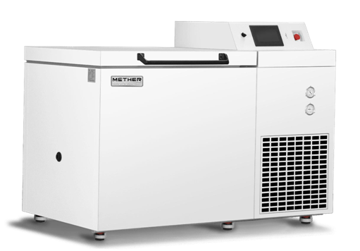

-150℃ Cryo-freezer provides a safe, convenient and economical alternative long term storage solution for customers. Cryopreservation refers to the storage of a living organism, cell or tissue at ultra-low temperatures such that it can be restored to the same viable state as before it was frozen. Storage for an indefinite amount of time requires samples to be maintained below the glass transition temperature of aqueous solutions, approximately -130℃, the temperature at which frozen water no longer sublimes and recrystallizes.